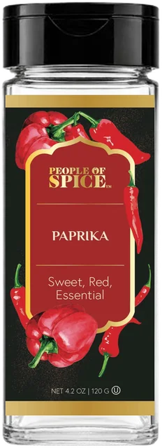

- Recipes
- Hungary
Chicken Paprikash
Hungary's comfort classic — chicken braised in a velvety, brick-red paprika and sour cream sauce.
Mild
- Serves
- 4
- Prep
- 15 min
- Cook
- 40 min
- Total
- 55 min
Method
- Brown the seasoned chicken in butter; set aside.
- Cook the onions gently until soft and golden, 10 minutes.
- Off the heat, stir in the Paprika, then add the stock and chicken.
- Cover and simmer 25 minutes.
- Whisk sour cream with flour, stir in and simmer 2 minutes. Serve over noodles.